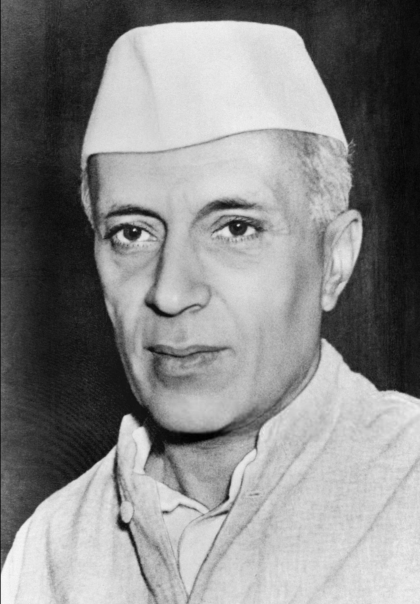

"It is easy to kill individuals but you cannot kill the ideas. Great empires crumbled, while the ideas survived".
Bhagat Singh (September 1907 – 23 March 1931) was a charismatic Indian revolutionary who participated in the murder of a junior British police officer and an Indian head constable in mistaken retaliation for the death of an Indian nationalist. He also took part in a largely symbolic bombing of the Central Legislative Assembly in Delhi and a hunger strike in jail, which—on the back of sympathetic coverage in Indian-owned newspapers—turned him into a household name in Punjab region, and after his execution at age 23 into a martyr and folk hero in Northern India. Borrowing ideas from Bolshevism and anarchism, he electrified a growing militancy in India in the 1930s, and prompted urgent introspection within the Indian National Congress's nonviolent but eventually successful campaign for India's independence.
In still later years, Singh, an atheist and socialist in adulthood, won admirers in India from among a political spectrum that included both communists and right-wing Hindu nationalists. Although many of Singh's associates, as well as many Indian anti-colonial revolutionaries, were also involved in daring acts and were either executed or died violent deaths, few came to be lionised in popular art and literature as did Singh, who is sometimes referred to as the Shaheed-e-Azam ("Great martyr" in Urdu and Punjabi).
Bhagat Singh was born on 27 September 1907 in the village of Banga in the Lyallpur district of the Punjab in what was then British India and is today Pakistan; he was the second of seven children—four sons, and three daughters—born to Vidyavati and her husband Kishan Singh Sandhu. Bhagat Singh's father and his uncle Ajit Singh were active in progressive politics, taking part in the agitation around the Canal Colonization Bill in 1907, and later the Ghadar Movement of 1914–1915.
After being sent to the village school in Banga for a few years, Bhagat Singh was enrolled in the Dayanand Anglo-Vedic School in Lahore. In 1923, he joined the National College in Lahore, founded two years earlier by Lala Lajpat Rai in response to Mahatma Gandhi's non-cooperation movement, which urged Indian students to shun schools and colleges subsidized by the British Indian government.
Police became concerned with Singh's influence on youths and arrested him in May 1927 on the pretext that he had been involved in a bombing that had taken place in Lahore in October 1926. He was released on a surety of Rs. 60,000 five weeks after his arrest. He wrote for, and edited, Urdu and Punjabi newspapers, published in Amritsar and also contributed to low-priced pamphlets published by the Naujawan Bharat Sabha that excoriated the British. He also wrote for Kirti, the journal of the Kirti Kisan Party ("Workers and Peasants Party") and briefly for the Veer Arjun newspaper, published in Delhi. He often used pseudonyms, including names such as Balwant, Ranjit and Vidhrohi.
In December 1928, Bhagat Singh and an associate, Shivaram Rajguru, both members of a small revolutionary group, the Hindustan Socialist Republican Association (also Army, or HSRA), shot dead a 21-year-old British police officer, John Saunders, in Lahore, Punjab, in what is today Pakistan, mistaking Saunders, who was still on probation, for the British senior police superintendent, James Scott, whom they had intended to assassinate. They held Scott responsible for the death of a popular Indian nationalist leader Lala Lajpat Rai for having ordered a lathi (baton) charge in which Rai was injured and two weeks thereafter died of a heart attack. As Saunders exited a police station on a motorcycle, he was felled by a single bullet fired from across the street by Rajguru, a marksman. As he lay injured, he was shot at close range several times by Singh, the postmortem report showing eight bullet wounds. Another associate of Singh, Chandra Shekhar Azad, shot dead an Indian police head constable, Channan Singh, who attempted to give chase as Singh and Rajguru fled. After having escaped, Bhagat Singh and his associates used pseudonyms to publicly announce avenging Lajpat Rai's death, putting up prepared posters that they had altered to show John Saunders as their intended target instead of James Scott.

Singh was thereafter on the run for many months, and no convictions resulted at the time. Surfacing again On 8 April 1929, Singh, accompanied by Batukeshwar Dutt, threw two bombs into the Assembly chamber from its public gallery while it was in session.[38] The bombs had been designed not to kill, but some members, including George Ernest Schuster, the finance member of the Viceroy's Executive Council, were injured. The smoke from the bombs filled the Assembly so that Singh and Dutt could probably have escaped in the confusion had they wished. Instead, they stayed shouting the slogan "Inquilab Zindabad!" ("Long Live the Revolution") and threw leaflets. The two men were arrested and subsequently moved through a series of jails in Delhi.
The arrest, and the resulting publicity, brought to light Singh's complicity in the John Saunders case. Awaiting trial, Singh gained public sympathy after he joined fellow defendant Jatin Das in a hunger strike, demanding better prison conditions for Indian prisoners, the strike ending in Das's death from starvation in September 1929. Bhagat Singh was convicted of the murder of John Saunders and Channan Singh, and hanged in March 1931, aged 23. He became a popular folk hero after his death.
Bhagat Singh was sent to Central Jail Mianwali from the Delhi jailand there he witnessed discrimination between European and Indian prisoners. He considered himself, along with others, to be a political prisoner. He noted that he had received an enhanced diet at Delhi which was not being provided at Mianwali. He led other Indian, self-identified political prisoners he felt were being treated as common criminals in a hunger strike. They demanded equality in food standards, clothing, toiletries, and other hygienic necessities, as well as access to books and a daily newspaper. They argued that they should not be forced to do manual labour or any undignified work in the jail.
The government tried to break the strike by placing different food items in the prison cells to test the prisoners' resolve. Water pitchers were filled with milk so that either the prisoners remained thirsty or broke their strike; nobody faltered and the impasse continued. The authorities then attempted force-feeding the prisoners but this was resisted. With the matter still unresolved, the government decided to advance the start of the Saunders murder trial, Singh, still on hunger strike, had to be carried to the court handcuffed on a stretcher; he had lost 14 pounds (6.4 kg) from his original weight of 133 pounds (60 kg) since beginning the strike.
The government was beginning to make concessions but refused to move on the core issue of recognising the classification of "political prisoner". By now, the condition of another hunger striker, Jatindra Nath Das, lodged in the same jail, had deteriorated considerably. The Jail committee recommended his unconditional release, but the government rejected the suggestion and offered to release him on bail. On 13 September 1929, Das died after a 63-day hunger strike. Singh finally heeded a resolution of the Congress party, and a request by his father, ending his hunger strike on 5 October 1929 after 116 days.[44] During this period, Singh's popularity among common Indians extended beyond Punjab.
Singh, Rajguru and Sukhdev were sentenced to death in the Lahore conspiracy case and ordered to be hanged on 24 March 1931. The schedule was moved forward by 11 hours and the three were hanged on 23 March 1931 at 7:30 pm in the Lahore jail. It is reported that no magistrate at the time was willing to supervise Singh's hanging as was required by law. The execution was supervised instead by an honorary judge, who also signed the three death warrants, as their original warrants had expired. The jail authorities then broke a hole in the rear wall of the jail, removed the bodies, and secretly cremated the three men under cover of darkness outside Ganda Singh Wala village, and then threw the ashes into the Sutlej river, about 10 kilometres (6.2 mi) from Ferozepore.
Subhas Chandra Bose said that: "Bhagat Singh had become the symbol of the new awakening among the youths."
Jawaharlal Nehru acknowledged that Bhagat Singh's popularity was leading to a new national awakening, saying: "He was a clean fighter who faced his enemy in the open field ... he was like a spark that became a flame in a short time and spread from one end of the country to the other dispelling the prevailing darkness everywhere".